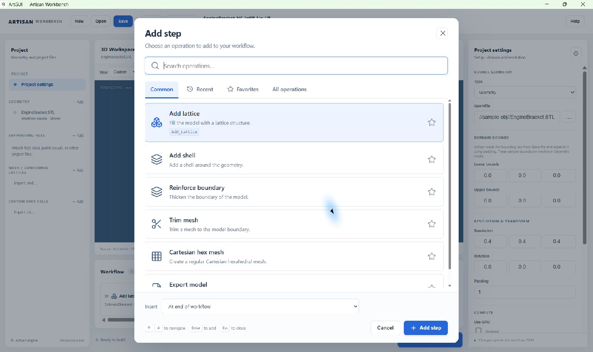

Build and edit workflows#
A workflow is an ordered list of operations. Each step works with the model, fields, meshes or definitions available at that point. Changing the order can change the result or make a required input unavailable.
Add an operation#
Choose + Add step beneath the 3D Workspace.
Search by a friendly name, command keyword or purpose. For example, search for
lattice,Lin_Interpolateorexport.Select the operation and check the Insert position at the bottom of the dialog. You can insert at the start, after an existing step or at the end.
Choose Add step. The new card is selected and its parameters appear in Properties.
Replace example values and file references with values appropriate to your design. Save the project.


Choose an operation and its insertion point together. Adding an Export step at the end is a common final action in a modelling workflow.#
Common contains frequently used operations. Recent lists operations you have added, while Favorites contains those marked with a star. All operations provides the full catalogue and a category filter. Search looks across the catalogue rather than only the current tab.
Category |
Typical purpose |
|---|---|
Geometry & shells |
Define shapes, shells and boundary features. |
Lattices & transitions |
Add lattice fields and vary or combine lattice regions. |
Volume meshing |
Create volume meshes for later operations. |
Surface meshing |
Create surface meshes. |
Mesh processing |
Trim or modify existing meshes. |
Lines & paths |
Create or manipulate line-based structures. |
Fields |
Build and combine spatial fields. |
Analysis & FEA |
Prepare meshes for analysis workflows. |
Import, export & storage |
Read, write, compress or recover workflow data. |
Edit parameters and presets#
Select a card to edit its properties. Scalars use individual fields; vectors provide separate components; nested data may appear as JSON. Keep coordinate systems and units consistent with the source geometry.
The Example preset selector replaces that operation’s parameters with another bundled example. A preset is a starting configuration, not a guarantee that it is suitable for the current geometry. Selecting a preset replaces your current values for that operation, including paths. Review the full parameter list afterwards.
For lattice operations, choose an integrated lattice, a project definition, or Other name / file… as appropriate. The name must match the intended definition. See Define and reuse lattices for creating project definitions.
ArtGUI preserves integer and floating-point values: 5 and 5.0 retain
their types through JSON editing, saving and reordering. Integer fields reject
fractional values. If a parameter genuinely needs a different numeric type,
change it explicitly in JSON and check the operation’s requirements.
Reorder or remove steps#
Select a card and choose Up or Down to move it. Remove step removes the selection; Clear workflow removes all operations after confirmation. Keep a saved copy before making substantial changes.
Adding, moving and removing steps can renumber the JSON keys. Use the displayed
order to check dependencies, not gaps in the original numbering. For example,
the engine-bracket Export operation originally has key 99 but is the sixth
card.
Keep these dependencies in order:
Create or import a mesh before an operation refers to its variable name.
Create grid fields before field-driven expressions use them.
Define a custom unit cell before a conformal lattice refers to it.
Define a lattice before an operation consumes its name.
Export after the modelling operations whose result you want to write.
ArtGUI checks named lattice-definition ordering before generation. It does not prove that every possible mesh, field, file or parameter dependency is valid; the engine may report additional issues when the workflow runs.
Use the JSON editor#
Choose JSON to inspect or edit the whole project. Use double quotes for
JSON names and strings, lowercase true and false, and no trailing
commas. Choose Apply JSON to validate and apply the text, or Cancel
to close without applying the text edits.
Applying JSON replaces the in-memory workflow and clears the current viewer layers. Reload the geometry for visual inspection, then choose Save to write the project. Invalid JSON stays unapplied and a message explains the problem.
Note
Applying valid JSON only confirms that the editor can read its structure. It does not confirm that the files exist or that Artisan can execute every operation. Inspect the run log after generation.